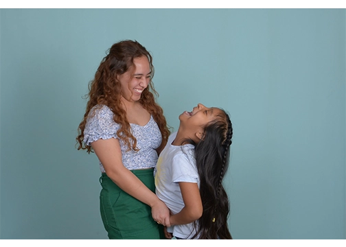
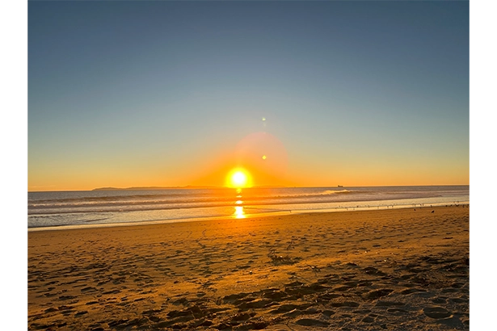

Samantha Sifuentes

This is my sister Alyssa and I
Where I'm From
I am from sunny Huntington Beach where I lived only a 5 minute drive from the beach and a 15 bike ride. I grew up always loving the outdoors to the point we would walk to the grocery store but my favorite was walking to the thrift store. I was fortunate to live in a state that never had winter but only a 1.5 hours drive away reaching a place called Big Bear. I could be at the beach all day which was great being so close. To me the ocean is not cold but our "winters" in comparison to our yea round weather was cold. I will say I still don't know how to surf but swiming and the water was still always a big part of my life. The one goal I make when I visit back home is to make a trip to the beach and I have yet to fail in the last 3 years.
How I got Here
This is a story I think shows the huge growth I've made over the years. I transferd from CSULB but after finding I could only teach Math since I was studying Mathematics Education I decided to transfer. I left CSULB to go to BYU still to study Mathematics Education. However, I never felt like I was meant to continue and decided to search for a new major and ran across TES. I met with Alisha Wall and from there I think I found the place I was meant to be. I enjoy math and studying it but I feel like I not only enjoy the many branches in TES but I feel like part of the family they have created within this major.
Where I am going
When thinking of graduation I do get excited of what is in store knowing what I want to do in the future. I have known since I was in elementary school I wanted to be a teacher. Over the years I have decided I want to teach high school level but now with TES as my major I am not sure what I want to focus on to teach. Besides exploring my options I am more leaning towards the artistic graphic design side of the major to teach. I am in debate if I would want to go back to finish my studies in Math in a different univeristy but nothing is set in stone. As well, deciding where to teach will as well be my challenge in deciding if I will stay in Utah or maybe consider going back home.
Playlist for My Life
- Somewhere Over the Rainbow -Isreal Kamakawiwo'ole
- Livin On a Prayer -Bon Jovi
- Go Your Own Way -Fleetwood Mac
- Ain't No Sunshine -Bill Withers
- Brown Eyed Girl -Van Morrison
- Caribbean Blue -Enya
- Hips Don't Lie -Shakira